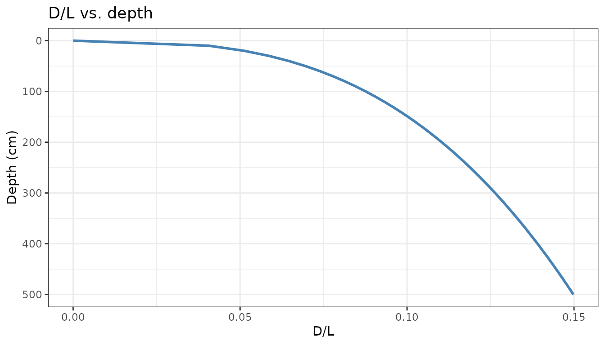
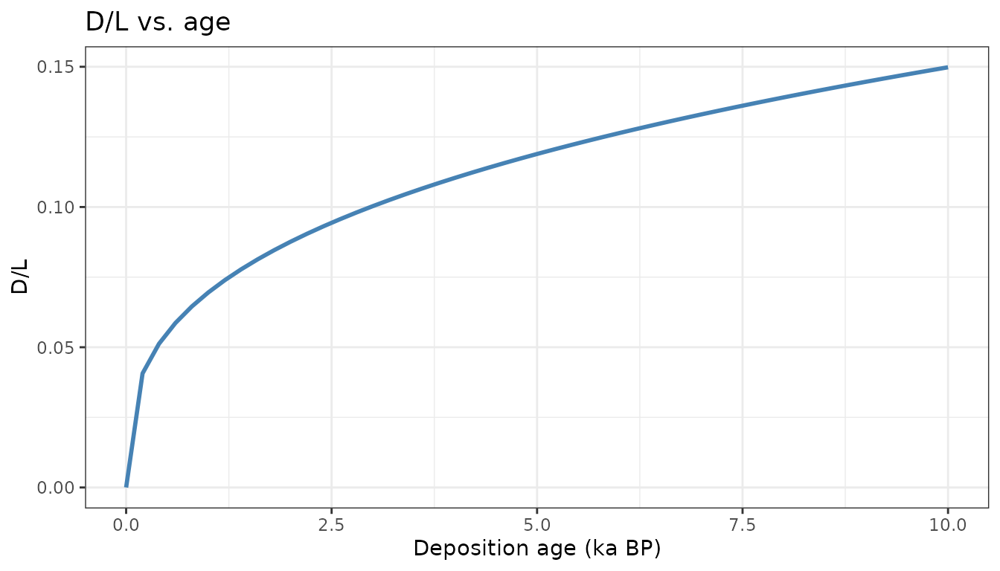
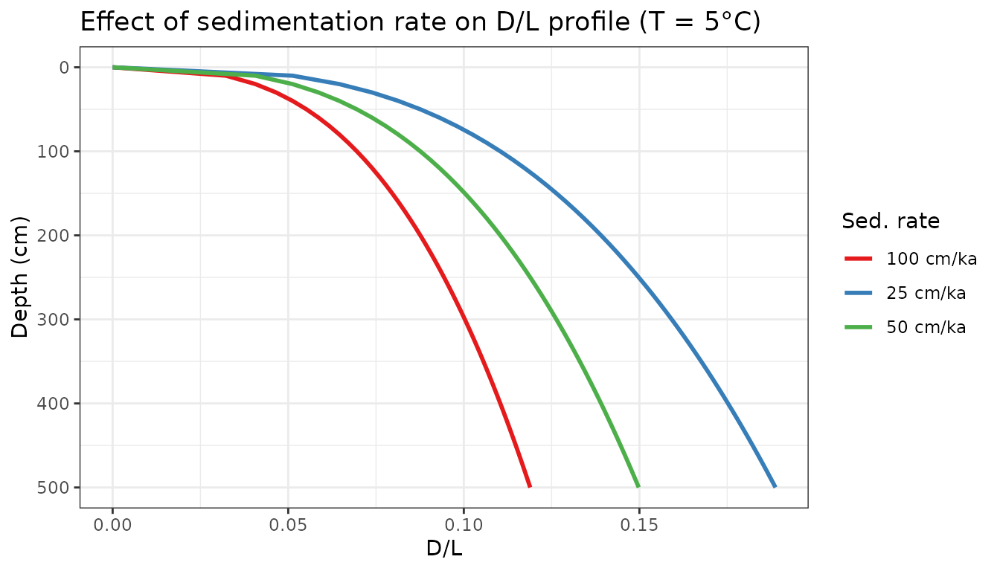
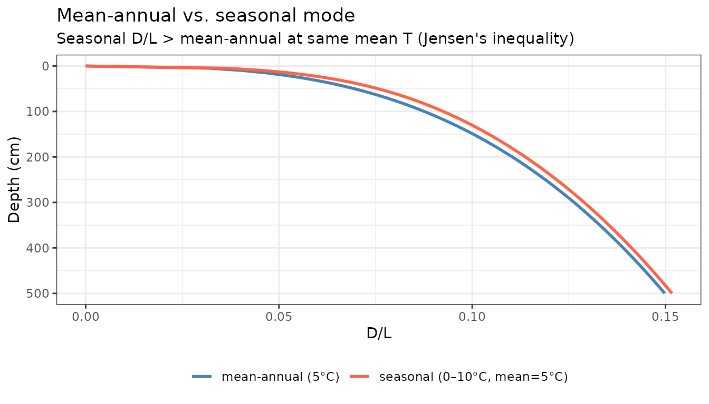
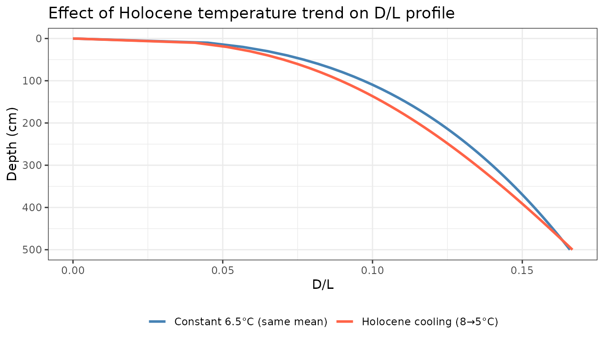

Age-depth models
The depth-series model needs to convert between sample depth (what you measure in the lab) and sample age (what drives racemization). The simplest case is a constant sedimentation rate:
# 50 cm/ka sedimentation rate; 10 ka core = 500 cm
am <- rate_to_age_model(rate_cm_per_ka = 50, max_depth_cm = 500)
# Verify the round-trip
am$depth_to_age(250) # should be 5 ka
#> [1] 5
am$age_to_depth(5) # should be 250 cm
#> [1] 250For a real core with radiocarbon-dated horizons, supply the tie-points directly:
Sanity check: constant temperature, constant rate
With a constant sedimentation rate and constant bottom water temperature, D/L should increase monotonically with depth (older = more racemized) and with age:
am <- rate_to_age_model(rate_cm_per_ka = 50, max_depth_cm = 500)
depths <- seq(0, 500, by = 10)
out <- racemize_depth_series(depths, age_model = am, temp_model = 5)
ggplot(out, aes(x = DL, y = depth_cm)) +
geom_line(colour = "steelblue", linewidth = 1) +
scale_y_reverse() +
labs(x = "D/L", y = "Depth (cm)", title = "D/L vs. depth") +
theme_bw()
ggplot(out, aes(x = deposition_age_ka, y = DL)) +
geom_line(colour = "steelblue", linewidth = 1) +
labs(x = "Deposition age (ka BP)", y = "D/L", title = "D/L vs. age") +
theme_bw()
The shape of the D/L-vs-age curve reflects the power-law kinetics: fastest accumulation when D/L is low (fresh sediment), slowing progressively as D/L rises.
Effect of sedimentation rate
Higher sedimentation rates spread the same age range over more depth, shifting the D/L profile to greater depths. Comparing three rates with the same bottom water temperature:
rates <- c(25, 50, 100) # cm/ka
depths <- seq(0, 500, by = 10)
res <- lapply(rates, function(r) {
am <- rate_to_age_model(rate_cm_per_ka = r, max_depth_cm = 500)
out <- racemize_depth_series(depths, age_model = am, temp_model = 5)
out$rate_cm_ka <- r
out
})
do.call(rbind, res) |>
mutate(rate_label = paste(rate_cm_ka, "cm/ka")) |>
ggplot(aes(x = DL, y = depth_cm, color = rate_label)) +
geom_line(linewidth = 1) +
scale_y_reverse() +
scale_color_brewer(palette = "Set1") +
labs(x = "D/L", y = "Depth (cm)", color = "Sed. rate",
title = "Effect of sedimentation rate on D/L profile (T = 5°C)") +
theme_bw()
At high sedimentation rates, the core samples a shorter time period for a given depth, so D/L values are lower throughout.
Mean-annual vs. seasonal mode
The seasonal mode applies thermal diffusion attenuation to the summer/winter anomaly. Samples at shallow depths experience stronger seasonal forcing; deeper (older) samples converge to the mean annual temperature. The Arrhenius nonlinearity means seasonality always increases D/L relative to the mean-annual case with the same mean temperature.
am <- rate_to_age_model(rate_cm_per_ka = 50, max_depth_cm = 500)
depths <- seq(0, 500, by = 5)
# Mean-annual mode: constant 5°C
out_ann <- racemize_depth_series(depths, age_model = am, temp_model = 5)
# Seasonal mode: same mean T but ±5°C seasonality
out_sea <- racemize_depth_series(depths,
age_model = am,
temp_model = 5,
sumT_model = 10,
winT_model = 0)
bind_rows(
mutate(out_ann, mode = "mean-annual (5°C)"),
mutate(out_sea, mode = "seasonal (0–10°C, mean=5°C)")
) |>
ggplot(aes(x = DL, y = depth_cm, color = mode)) +
geom_line(linewidth = 1) +
scale_y_reverse() +
scale_color_manual(values = c("steelblue", "tomato")) +
labs(x = "D/L", y = "Depth (cm)", color = NULL,
title = "Mean-annual vs. seasonal mode",
subtitle = "Seasonal D/L > mean-annual at same mean T (Jensen's inequality)") +
theme_bw() +
theme(legend.position = "bottom")
Note that the gap narrows with depth: by ~300 cm (~6 ka at 50 cm/ka), the annual diffusion e-folding depth (~0.71 m for = 1.6 m²/yr) has attenuated the seasonal signal substantially, and both curves converge.
Time-varying temperature
For a Holocene cooling scenario, pass a data frame to
temp_model:
am <- rate_to_age_model(rate_cm_per_ka = 50, max_depth_cm = 500)
depths <- seq(0, 500, by = 10)
# Linear cooling from 8°C at 10 ka to 5°C at present
cooling_hist <- data.frame(age_ka = c(0, 10), temp_C = c(5, 8))
out_cool <- racemize_depth_series(depths, age_model = am,
temp_model = cooling_hist)
out_flat <- racemize_depth_series(depths, age_model = am,
temp_model = 6.5) # same mean
bind_rows(
mutate(out_cool, scenario = "Holocene cooling (8→5°C)"),
mutate(out_flat, scenario = "Constant 6.5°C (same mean)")
) |>
ggplot(aes(x = DL, y = depth_cm, color = scenario)) +
geom_line(linewidth = 1) +
scale_y_reverse() +
scale_color_manual(values = c("steelblue", "tomato")) +
labs(x = "D/L", y = "Depth (cm)", color = NULL,
title = "Effect of Holocene temperature trend on D/L profile") +
theme_bw() +
theme(legend.position = "bottom")
The cooling scenario produces higher D/L at depth (older samples experienced warmer temperatures early in their history), even though both profiles have the same time-averaged temperature. This is the signal the inversion framework is designed to detect. ```